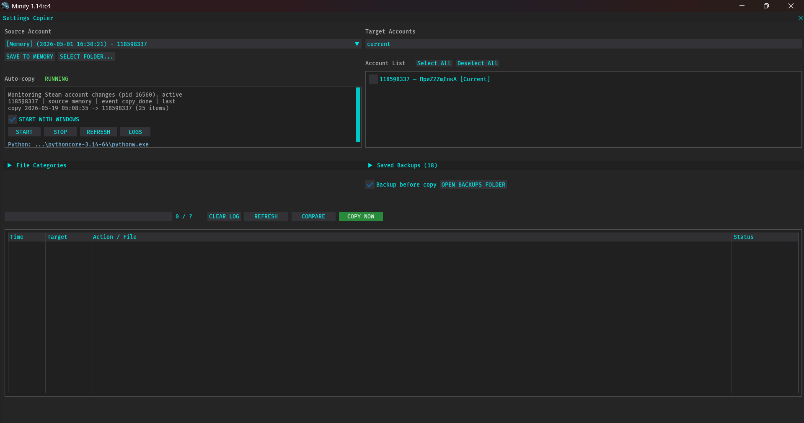

Copy your Dota 2 settings (like hotkeys, video, audio, and hero guides) from one Steam account to another. It can also do this automatically in the background when you switch accounts!

Extract & put the mod onto your Minify installation's mods folder.